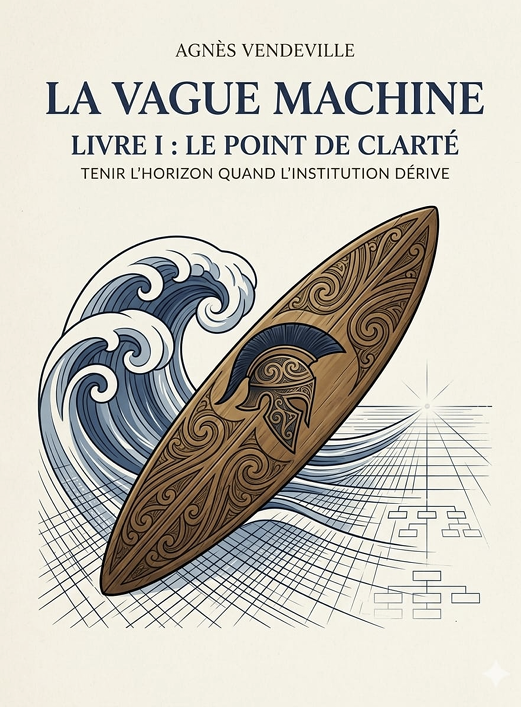

Plonger dans une scène institutionnelle fictive pour éclairer les dynamiques d’une structure en tension.
Un récit qui met en mouvement une organisation dont les mécanismes se dérèglent, se referment, se protègent, jusqu’à produire ce qu’ils prétendent éviter.
Une écriture tenue, sobre, verticale, mêlant narration et analyse pour dévoiler la logique d’une Machine qui dépasse les individus et transforme les gestes en rouages.

Claire.
Lucide.
Simple.
Assurée.
Et j’ai su, à cet instant précis, que la Vague Machine ne m’emporterait pas.